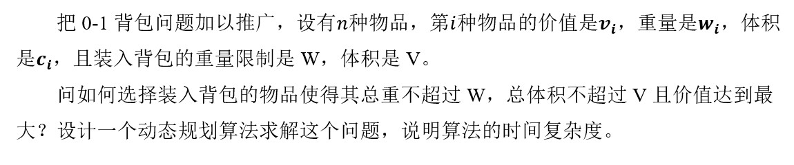
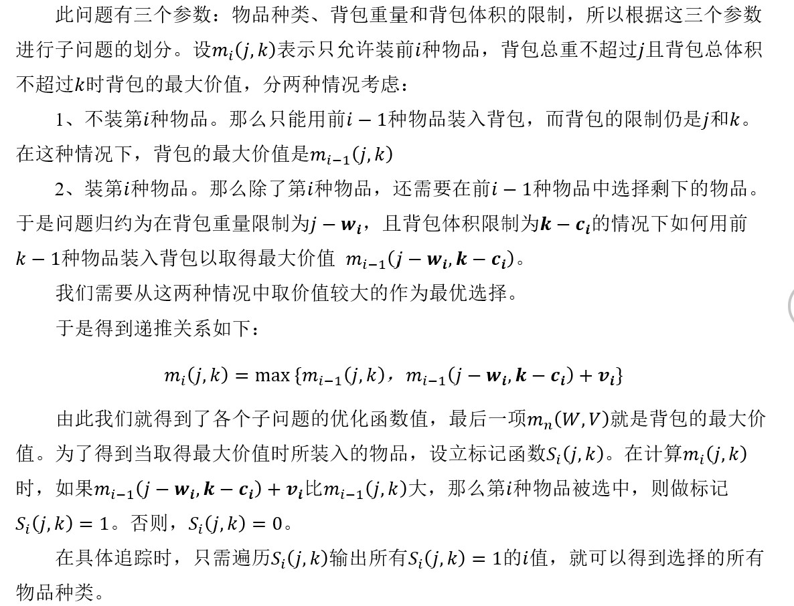
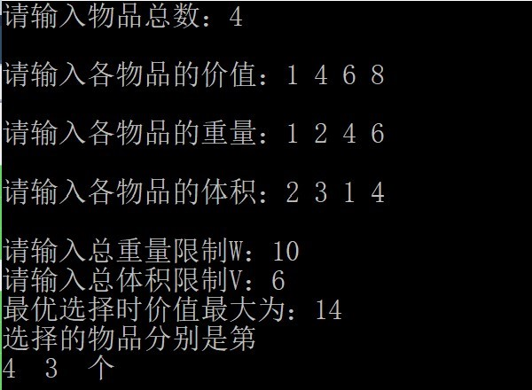
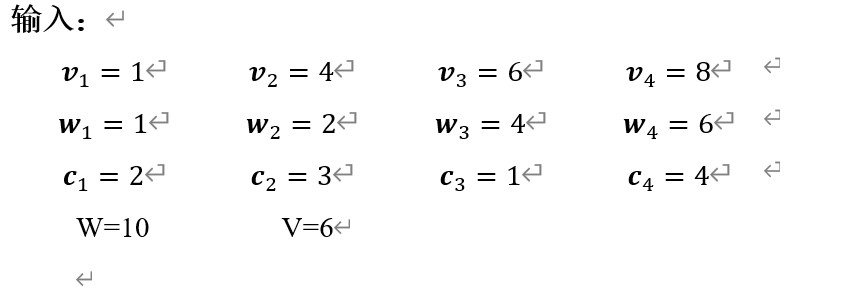
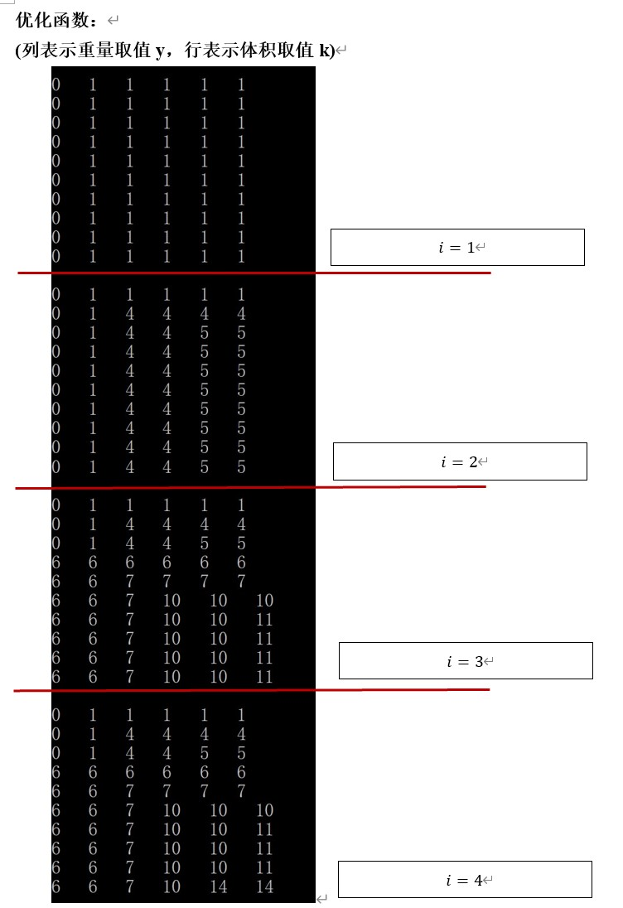
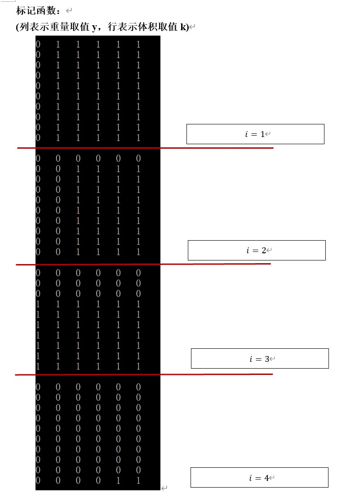

实验要求

设计原理

核心代码
//优化+标记void Knapsack()
{
int i,j,k;
for (i = 1; i <= n; i++)
{
for (j = 1; j <= W; j++)
{
for (k = 1; k <= V; k++)
{
if ((goods[i].weight <= j) && (goods[i].c <= k))
{
if (m[i - 1][j][k] > (m[i - 1][j - goods[i].weight][k - goods[i].c] + goods[i].value))
{
m[i][j][k] = m[i - 1][j][k];
s[i][j][k] = 0;
}
else
{
m[i][j][k]=m[i - 1][j - goods[i].weight][k - goods[i].c] + goods[i].value;
s[i][j][k] = 1;
}
}
else
{
m[i][j][k] = m[i - 1][j][k];
s[i][j][k] = 0;
}
}
}
}
}
实验结果




算法时间复杂度分析

实验总结
动态规划算法设计的难点和重点在于如何划分子问题，以及找出递推方程。并且，在使用动态规划算法前，还需要验证问题是否满足优化原则。
在具体的编程实现中难度不大。